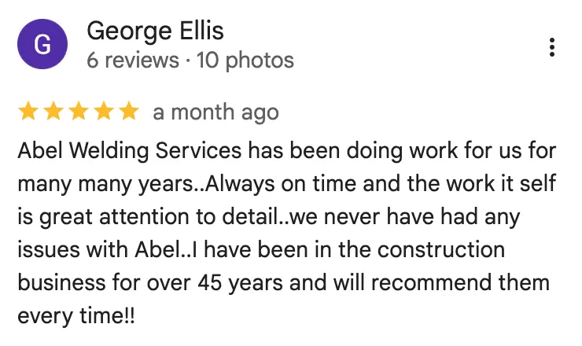
High-pressure pipe welding in Fort Lauderdale
High-Pressure Pipe Welding in Fort Lauderdale
Abel Welding Services provides high-pressure pipe welding in Fort Lauderdale for industrial systems, heavy-duty piping, commercial facilities, and projects that demand strong, dependable weld quality.
Average response time: 5 minutes or less
Client feedback
What Fort Lauderdale Clients Say About Our Pipe Welding Work
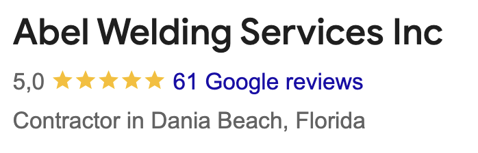
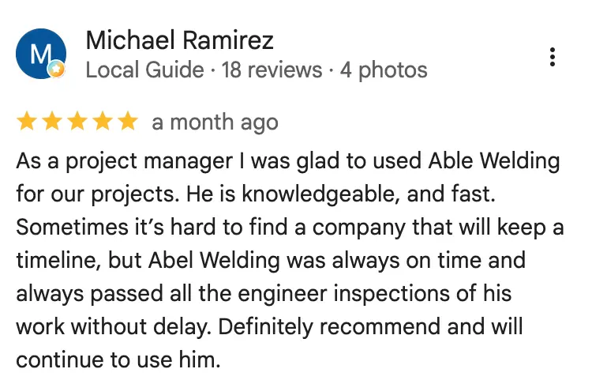
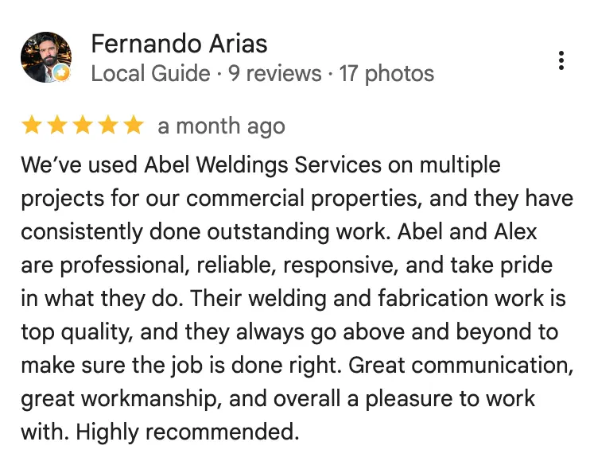
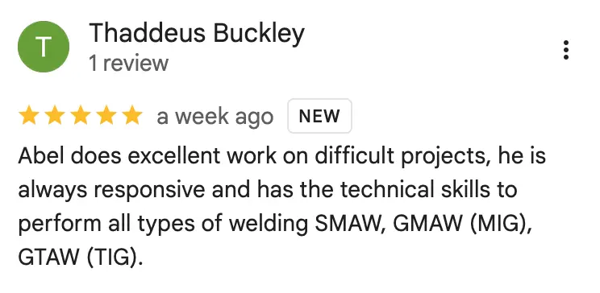
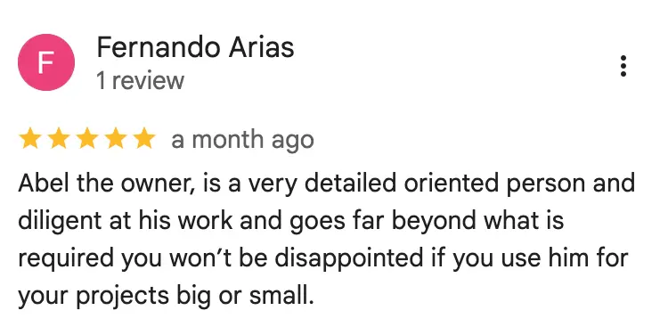
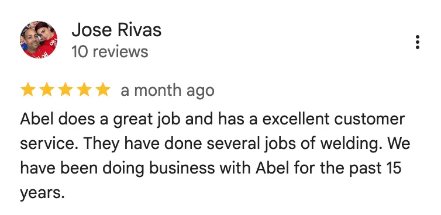
Project gallery
See Our Pipe Welding Work in Fort Lauderdale
Pipe welding examples for heavy-duty systems, industrial applications, and field support work.
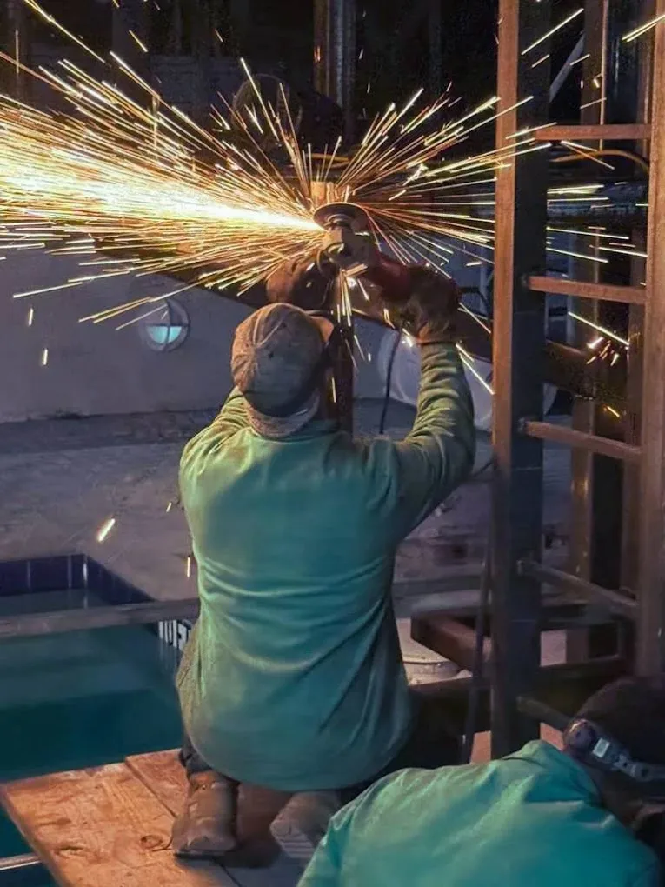
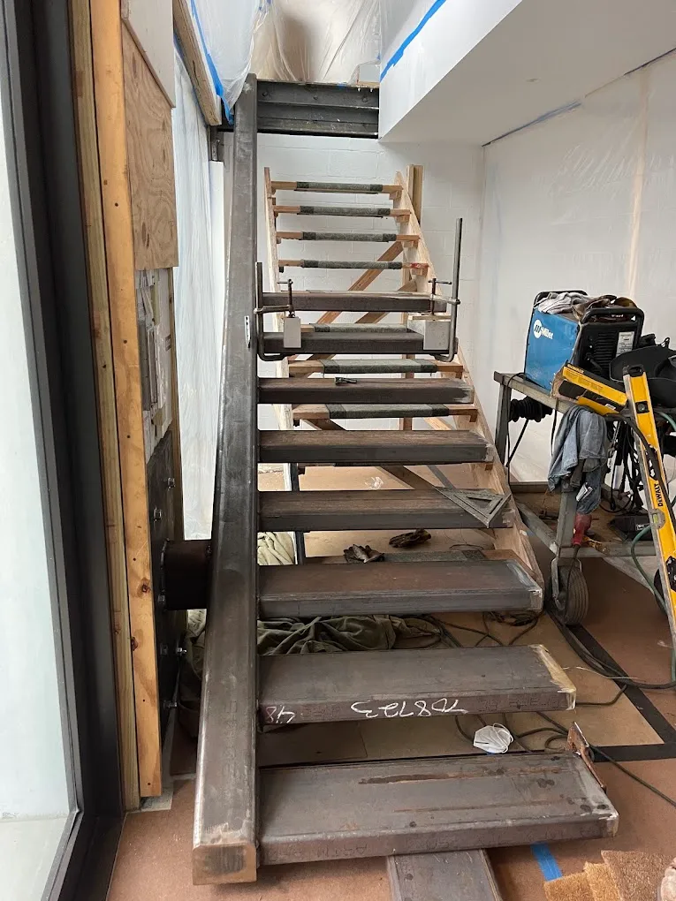
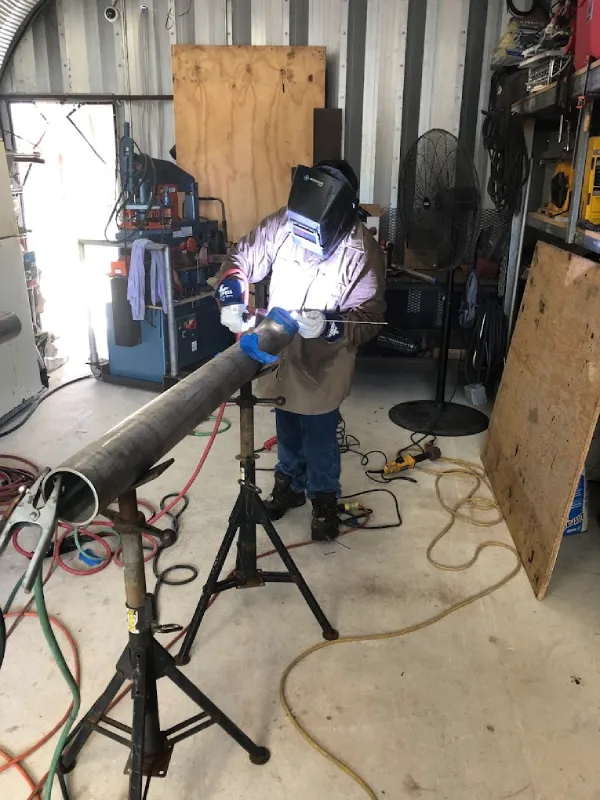
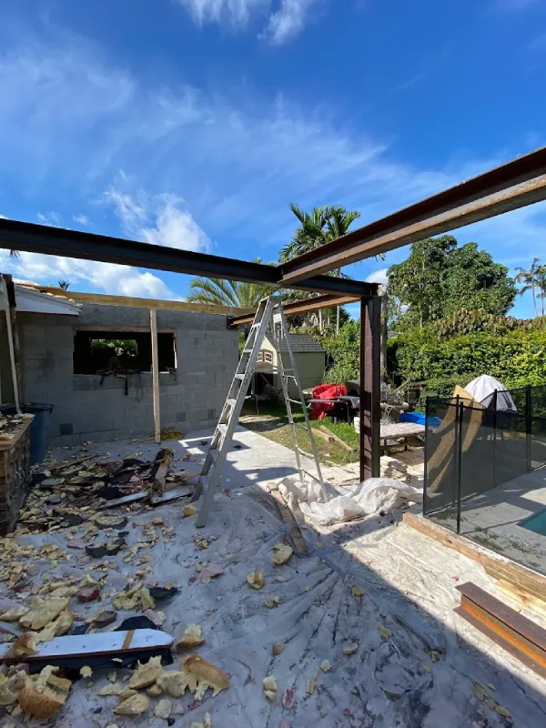
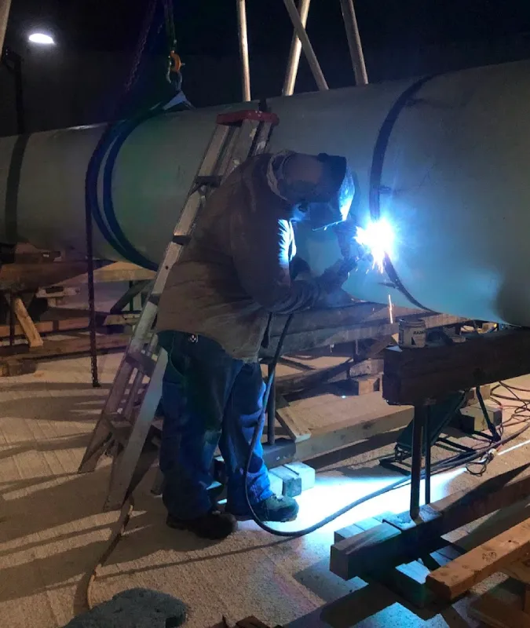
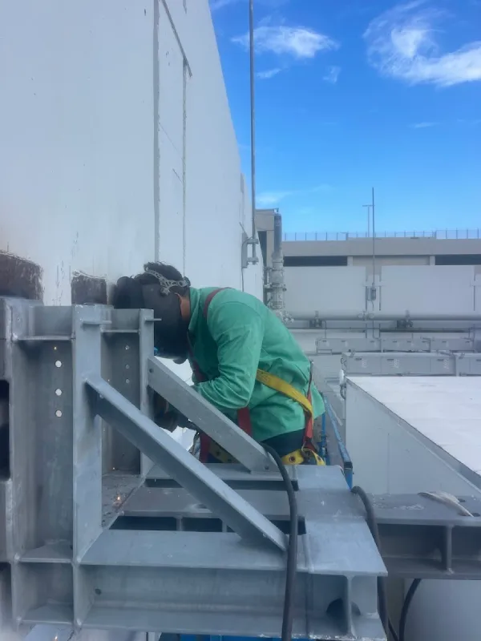
Pipe welding services
High-Pressure Pipe Welding Solutions
Welding support for industrial clients, contractors, facilities, and heavy-duty piping projects that require precise, reliable weld work.
Fort Lauderdale Pipe Welding
Built for high-pressure pipe systems, industrial work, and heavy-duty field welding
Abel Welding Services supports demanding pipe welding work with a focus on strength, consistency, and fit for high-performance environments.
01
High-demand systems
High-Pressure Pipe Welding
Welding support for high-pressure pipe assemblies where durability and weld integrity matter.
02
Industrial-ready
Industrial Pipe Welding
Pipe welding for industrial environments, plant systems, commercial facilities, and heavy-duty operations.
03
Repair and replacement
Pipe Repair Welding
Welding repairs for damaged pipe sections, reinforcements, and problem areas in metal piping systems.
04
Field support
On-Site Pipe Welding
Pipe welding at the project site when the assembly cannot be moved or needs field installation support.
05
Fabrication alignment
Pipe Fit-Up and Welding
Support for pipe fit-up, joining, alignment, and welded assembly work on demanding projects.
06
Commercial and contractor
Heavy-Duty Pipe System Support
Welding support for larger pipe-related scopes involving industrial structures, commercial systems, and contractor-led jobs.
How it works
What Happens When You Call
Tell us about the pipe welding job
Share the pipe type, job environment, pressure demands, and whether the work is new installation, repair, or field support.
We review the scope and site
We assess access, configuration, and what is needed to complete the pipe welding work correctly.
You get a clear estimate
We provide a straightforward estimate before the work begins.
We complete the pipe welding
Your pipe welding project is handled with attention to strength, fit-up, and dependable weld quality.
Common questions
Pipe Welding FAQ
Do you handle high-pressure pipe welding in Fort Lauderdale?
Yes. Abel Welding Services provides high-pressure pipe welding support in Fort Lauderdale and nearby service areas.
What types of pipe welding jobs do you take on?
Common work includes heavy-duty pipe welding, repairs, on-site pipe welding, industrial piping support, and pipe fit-up related projects.
Do you work on industrial and commercial pipe systems?
Yes. Pipe welding support is available for industrial, commercial, and contractor-led projects.
Can you handle on-site pipe welding?
Yes. Many pipe welding jobs require field support, especially when pipe assemblies are part of a fixed or active system.
Which nearby areas do you serve?
In addition to Fort Lauderdale, nearby service areas can include Davie, Plantation, Oakland Park, Wilton Manors, and surrounding Broward County communities.
Ready to get started?
Need High-Pressure Pipe Welding in Fort Lauderdale?
Call now or use the short form below for a fast callback about your pipe welding project.
Our service area
Serving Fort Lauderdale and Nearby Communities
Abel Welding Services Inc provides high-pressure pipe welding throughout Fort Lauderdale and surrounding areas.
Main service locations
- Fort Lauderdale
- Hollywood
- Davie
- Plantation
- Oakland Park
- Wilton Manors